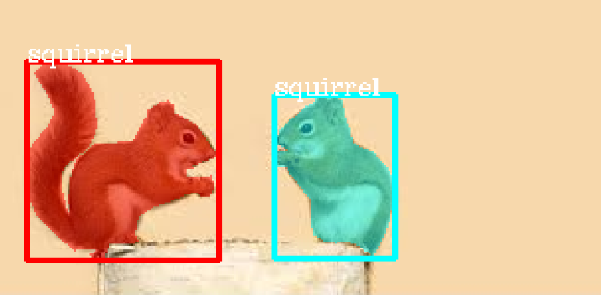
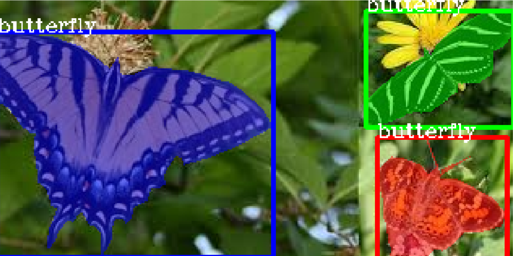

Custom Training With PixelLib¶
Implement custom training on your own dataset using PixelLib’s Library. In just seven Lines of code you can create a custom model for perform instance segmentation and object detection for your own application.
Prepare your dataset
Our goal is to create a model that can perform instance segmentation and object detection on butterflies and squirrels. Collect images for the objects you want to detect and annotate your dataset for custom training. Labelme is the tool employed to perform polygon annotation of objects. Create a root directory or folder and within it create train and test folder. Separate the images required for training (a minimum of 300) and test. Put the images you want to use for training in the train folder and put the images you want to use for testing in the test folder. You will annotate both images in the train and test folder. Download Nature’s dataset used as a sample dataset in this article, unzip it to extract the images’ folder. This dataset will serve as a guide for you to know how to organize your images. Ensure that the format of the directory of your own dataset directory is not different from it. Nature is a dataset with two categories butterfly and squirrel. There is 300 images for each class for training and 100 images for each class for testing i.e 600 images for training and 200 images for validation. Nature is a dataset with 800 images.
Read this article on medium and learn how to annotate objects with Labelme.
Note: Use labelme for annotation of objects. If you use a different annotation tool it will not be compatible with the library.
Nature >>train>>>>>>>>>>>> image1.jpg
image1.json
image2.jpg
image2.json
>>test>>>>>>>>>>>>>>>> img1.jpg
img1.json
img2.jpg
img2.json
Sample of folder directory after annotation.
Visualize Dataset
Visualize a sample image before training to confirm that the masks and bounding boxes are well generated.
import pixellib
from pixellib.custom_train import instance_custom_training
vis_img = instance_custom_training()
vis_img.load_dataset("Nature")
vis_img.visualize_sample()
import pixellib
from pixellib.custom_train import instance_custom_training
vis_img = instance_custom_training()
We imported in pixellib, from pixellib import the class instance_custom_training and created an instance of the class.
vis_img.load_dataset("Nature")
We loaded the dataset using load_dataset function. PixelLib requires polygon annotations to be in coco format, when you call the load_data function the individual json files in the train and test folder will be converted into a single train.json and test.json respectively. The train and test json files will be located in the root directory as the train and test folder. The new folder directory will now look like this:
Nature >>>>>>>>train>>>>>>>>>>>>>>> image1.jpg
train.json image1.json
image2.jpg
image2.json
>>>>>>>>>>>test>>>>>>>>>>>>>>>>> img1.jpg
test.json img1.json
img2.jpg
img2.json
Inside the load_dataset function annotations are extracted from the jsons’s files. Bitmap masks are generated from the polygon points of the annotations and bounding boxes are generated from the masks. The smallest box that encapsulates all the pixels of the mask is used as a bounding box.
vis_img.visualize_sample()
When you called this function it shows a sample image with a mask and bounding box.
 Great! the dataset is fit for training, the load_dataset function successfully generates mask and bounding box for each object in the image. Random colors are generated for the masks in HSV space and then converted to RGB.
Train a custom model Using your dataset
import pixellib
from pixellib.custom_train import instance_custom_training
train_maskrcnn = instance_custom_training()
train_maskrcnn.modelConfig(network_backbone = "resnet101", num_classes= 2, batch_size = 4)
train_maskrcnn.load_pretrained_model("mask_rcnn_coco.h5")
train_maskrcnn.load_dataset("Nature")
train_maskrcnn.train_model(num_epochs = 300, augmentation=True, path_trained_models = "mask_rcnn_models")
This is the code for performing training, in just seven lines of code you train your dataset.
train_maskrcnn.modelConfig(network_backbone = "resnet101", num_classes= 2, batch_size = 4)
We called the function modelConfig, i.e model’s configuration. It takes the following parameters:
network_backbone: This the CNN network used as a feature extractor for mask-rcnn. The feature extractor used is resnet101.
num_classes: We set the number of classes to the categories of objects in the dataset. In this case we have two classes(butterfly and squirrel) in nature’s dataset.
batch_size: This is the batch size for training the model. It is set to 4.
train_maskrcnn.load_pretrained_model("mask_rcnn_coco.h5")
train_maskrcnn.load_dataset("Nature")
We are going to employ the technique of transfer learning for training the model. Coco model has been trained on 8O categories of objects, it has learnt a lot of features that will help in training the model. We called the function load_pretrained_model function to load the mask-rcnn coco model.We loaded the dataset using load_dataset function.
Download coco model from here
train_maskrcnn.train_model(num_epochs = 300, augmentation=True,path_trained_models = "mask_rcnn_models")
Finally, we called the train function for training maskrcnn model. We called train_model function. The function takes the following parameters:
num_epochs: The number of epochs required for training the model. It is set to 300.
augmentation: Data augmentation is applied on the dataset, this is because we want the model to learn different representations of the objects.
path_trained_models: This is the path to save the trained models during training. Models with the lowest validation losses are saved.
Using resnet101 as network backbone For Mask R-CNN model
Train 600 images
Validate 200 images
Applying augmentation on dataset
Checkpoint Path: mask_rcnn_models
Selecting layers to train
Epoch 1/200
100/100 - 164s - loss: 2.2184 - rpn_class_loss: 0.0174 - rpn_bbox_loss: 0.8019 - mrcnn_class_loss: 0.1655 - mrcnn_bbox_loss: 0.7274 - mrcnn_mask_loss: 0.5062 - val_loss: 2.5806 - val_rpn_class_loss: 0.0221 - val_rpn_bbox_loss: 1.4358 - val_mrcnn_class_loss: 0.1574 - val_mrcnn_bbox_loss: 0.6080 - val_mrcnn_mask_loss: 0.3572
Epoch 2/200
100/100 - 150s - loss: 1.4641 - rpn_class_loss: 0.0126 - rpn_bbox_loss: 0.5438 - mrcnn_class_loss: 0.1510 - mrcnn_bbox_loss: 0.4177 - mrcnn_mask_loss: 0.3390 - val_loss: 1.2217 - val_rpn_class_loss: 0.0115 - val_rpn_bbox_loss: 0.4896 - val_mrcnn_class_loss: 0.1542 - val_mrcnn_bbox_loss: 0.3111 - val_mrcnn_mask_loss: 0.2554
Epoch 3/200
100/100 - 145s - loss: 1.0980 - rpn_class_loss: 0.0118 - rpn_bbox_loss: 0.4122 - mrcnn_class_loss: 0.1271 - mrcnn_bbox_loss: 0.2860 - mrcnn_mask_loss: 0.2609 - val_loss: 1.0708 - val_rpn_class_loss: 0.0149 - val_rpn_bbox_loss: 0.3645 - val_mrcnn_class_loss: 0.1360 - val_mrcnn_bbox_loss: 0.3059 - val_mrcnn_mask_loss: 0.2493
This is the training log it shows the network backbone used for training mask-rcnn which is resnet101, the number of images used for training and number of images used for validation. In the path_to_trained models’s directory the models are saved based on decrease in validation loss, typical model name will appear like this: mask_rcnn_model_25–0.55678, it is saved with its epoch number and its corresponding validation loss.
Network Backbones: There are two network backbones for training mask-rcnn
1. Resnet101
2. Resnet50
Google colab: Google Colab provides a single 12GB NVIDIA Tesla K80 GPU that can be used up to 12 hours continuously.
Using Resnet101: Training Mask-RCNN consumes alot of memory. On google colab using resnet101 as network backbone you will be able to train with a batchsize of 4. The default network backbone is resnet101. Resnet101 is used as a default backbone because it appears to reach a lower validation loss during training faster than resnet50. It also works better for a dataset with multiple classes and much more images.
Using Resnet50: The advantage with resnet50 is that it consumes lesser memory, you can use a batch_size of 6 0r 8 on google colab depending on how colab randomly allocates gpu. The modified code supporting resnet50 will be like this.
Full code
import pixellib
from pixellib.custom_train import instance_custom_training
train_maskrcnn = instance_custom_training()
train_maskrcnn.modelConfig(network_backbone = "resnet50", num_classes= 2, batch_size = 6)
train_maskrcnn.load_pretrained_model("mask_rcnn_coco.h5")
train_maskrcnn.load_dataset("Nature")
train_maskrcnn.train_model(num_epochs = 300, augmentation=True, path_trained_models = "mask_rcnn_models")
The main differences from the original code is that in the model configuration function we set network_backbone to be resnet50 and changed the batch size to 6.
The only difference in the training log is this:
Using resnet50 as network backbone For Mask R-CNN model
It shows that we are using resnet50 for training.
Note: The batch_sizes given are samples used for google colab. If you are using a less powerful GPU, reduce your batch size, for example a PC with a 4G RAM GPU you should use a batch size of 1 for both resnet50 or resnet101. I used a batch size of 1 to train my model on my PC’s GPU, train for less than 100 epochs and it produced a validation loss of 0.263. This is favourable because my dataset is not large. A PC with a more powerful GPU you can use a batch size of 2. If you have a large dataset with more classes and much more images use google colab where you have free access to a single 12GB NVIDIA Tesla K80 GPU that can be used up to 12 hours continuously. Most importantly try and use a more powerful GPU and train for more epochs to produce a custom model that will perform efficiently across multiple classes. Achieve better results by training with much more images. 300 images for each each class is recommended to be the minimum required for training.
Model Evaluation
When we are done with training we should evaluate models with lowest validation losses. Model evaluation is used to access the performance of the trained model on the test dataset. Download the trained model from here.
import pixellib
from pixellib.custom_train import instance_custom_training
train_maskrcnn = instance_custom_training()
train_maskrcnn.modelConfig(network_backbone = "resnet101", num_classes= 2)
train_maskrcnn.load_dataset("Nature")
train_maskrcnn.evaluate_model("mask_rccn_models/Nature_model_resnet101.h5")
output
mask_rcnn_models/Nature_model_resnet101.h5 evaluation using iou_threshold 0.5 is 0.890000
The mAP(Mean Avearge Precision) of the model is 0.89.
You can evaluate multiple models at once, what you just need is to pass in the folder directory of the models.
import pixellib
from pixellib.custom_train import instance_custom_training
train_maskrcnn = instance_custom_training()
train_maskrcnn.modelConfig(network_backbone = "resnet101", num_classes= 2)
train_maskrcnn.load_dataset("Nature")
train_maskrcnn.evaluate_model("mask_rccn_models")
Output log
mask_rcnn_models\Nature_model_resnet101.h5 evaluation using iou_threshold 0.5 is 0.890000
mask_rcnn_models\mask_rcnn_model_055.h5 evaluation using iou_threshold 0.5 is 0.867500
mask_rcnn_models\mask_rcnn_model_058.h5 evaluation using iou_threshold 0.5 is 0.8507500
import pixellib
from pixellib.custom_train import instance_custom_training
train_maskrcnn = instance_custom_training()
train_maskrcnn.modelConfig(network_backbone = "resnet50", num_classes= 2)
train_maskrcnn.load_dataset("Nature")
train_maskrcnn.evaluate_model("path_to_model path or models's folder directory")
Note: Change the network_backbone to resnet50 if you are evaluating a resnet50 model.
Visit Google Colab’s notebook set up for training a custom dataset
Learn how how to perform inference with your custom model by reading this tutorial